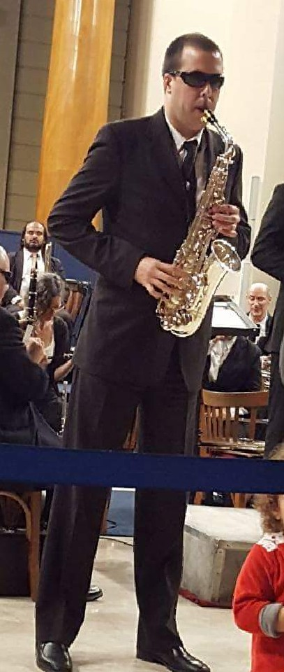

Sobre mi

Soy oriundo de Los Buenos Aires, Argentina. Músico instrumentista de orquesta y banda por la Universidad Nacional de las Artes.
Actualmente ocupo el cargo de solista de Saxofón alto en la Banda Sinfónica Nacional de Ciegos de este hermoso país. Organismo orquestal al que tengo la suerte de pertenecer desde el año 2006 y que es único en el mundo por estas características de integración y profesionalismo, equiparado con las principales orquestas del estado argentino.
Un poco friki de la tecnología, buen toqueteador de audio digital editando, mezclando y produciendo con Reaper, experto certificado en el lector de pantallas NVDA, programador aficionado, y sobre todas las cosas, orgulloso padre de la criatura más hermosa y cariñosa del mundo
Ciego desde mis 18 años por una de las consecuencias de una enfermedad “rara” llamada síndrome de Marfan, encontré en la música y más adelante en la informática y el audio digital esas ganas de aprender y desarrollarme profesionalmente.
El 2020 me impuso el tiempo para comenzar a investigar un poco sobre esa cosa llamada programación, que abordé como quien pretende entender la cuántica. Mis primeros códigos fueron en el lenguaje AutoHotkey, desarrollando scripts para gambetear barreras de accesibilidad en plugins de audio e instrumentos virtuales. Más adelante me atrapó el desarrollo web,que fue angular en el nacimiento de https://gera.ar. El cual fue creado poco a poco desde 0 con mas ganas que conocimiento, y al cual alimento como el libro aquel que dicen que hay que escribir antes de partir.
El lenguaje python, me permitió entre otras cosas, desarrollar scripts, juegos sencillos para el peque, y algunos complementos para el lector de pantallas NVDA compartidos con la comunidad de usuarios de habla hispana y de otras latitudes.
No tengo formación formal en docencia, pero disfruto el compartir lo aprendido. No soy creyente en fábulas religiosas, solo en el poder del conocimiento colectivo. Tengo como finalidad aportar mi granito de arena en el empoderamiento de las personas con discapacidad visual a través del conocimiento informático.
El confinamiento de 2020 me encontró impartiendo clases a distancia, programando, participando en algunas charlas sobre accesibilidad, en las ponencias de los encuentros de usuarios y desarrolladores de la comunidad de NVDA en español, participando en la producción de hermosos proyectos con la BSNC, y viendo crecer de cerca a mi pipiolo. La mayoría cosas que aún sigo haciendo, a parte del disfrutar el haber vuelto a los conciertos presenciales con la Banda Sinfónica Nacional de Ciegos.
Contacto